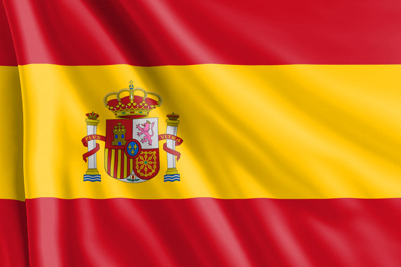
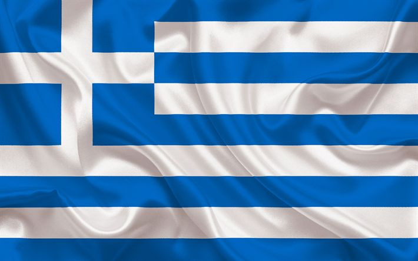
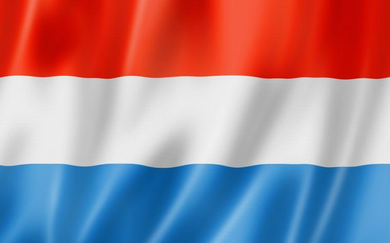
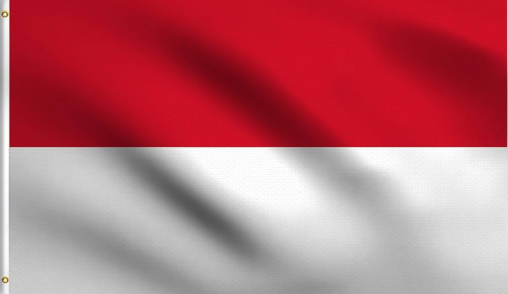
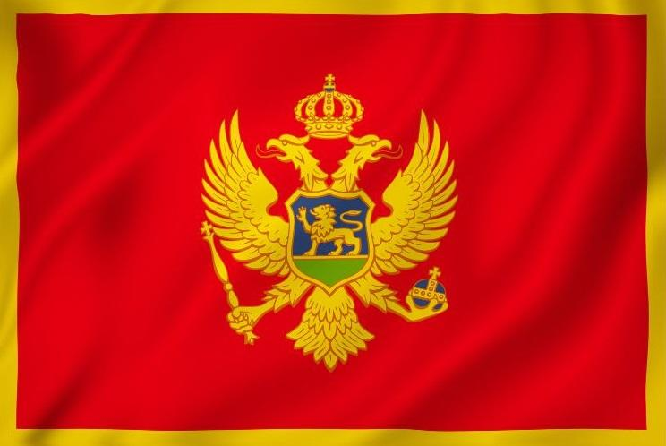
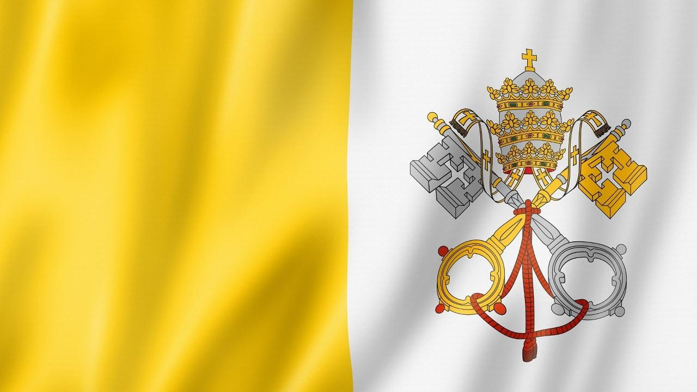
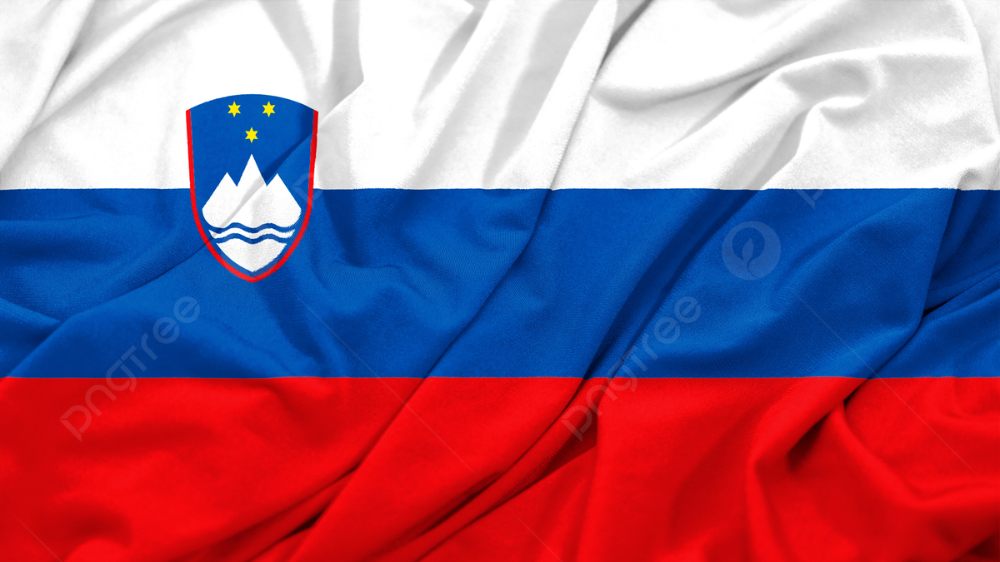
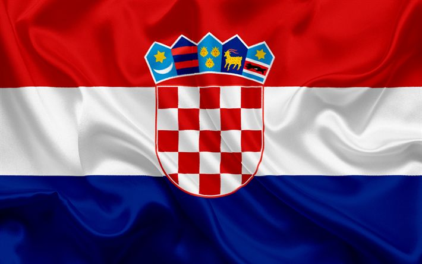

Explorando los Continentes y Países del Mundo
España

Primer Ministro: Pedro Sánchez
Idioma: Español
Tamaño: 505,990 km²
Habitantes: Aproximadamente 47 millones
Cultura: Conocida por su arte, gastronomía y festivales.
Francia
 Primer Ministro: Emmanuel Macron
Idioma: Francés
Tamaño:551,695 km²
Habitantes: Aproximadamente 65 millones
Cultura: Conocida por su arte, moda y gastronomía.
Primer Ministro: Emmanuel Macron
Idioma: Francés
Tamaño:551,695 km²
Habitantes: Aproximadamente 65 millones
Cultura: Conocida por su arte, moda y gastronomía.
Grecia

Primer Ministro: Kyriakos Mitsotakis
Idioma: Griego
Tamaño: 131,957 km²
Habitantes: Aproximadamente 10 millones
Cultura: Famosa por su historia, mitología y tradiciones.
Italia
 Primer Ministro: Giorgia Meloni
Idioma: Italiano
Tamaño: 301,340 km²
Habitantes: Aproximadamente 60 millones
Cultura: Conocida por su arte, historia y gastronomía.
Primer Ministro: Giorgia Meloni
Idioma: Italiano
Tamaño: 301,340 km²
Habitantes: Aproximadamente 60 millones
Cultura: Conocida por su arte, historia y gastronomía.
Luxemburgo

Primer Ministro: Enrique
Idioma: Luxemburgués, francés, alemán
Tamaño:2,586 km²
Habitantes:Aproximadamente 645,000
Cultura: Diversidad cultural, rica en tradiciones.
Mónaco

Primer Ministro: Alberto II
Idioma: Francés
Tamaño:27,830 km²
Habitantes: Aproximadamente 39,000
Cultura: Conocida por su glamour y eventos.
Montenegro

Primer Ministro: Jakov Milatović
Idioma: Montenegrino
Tamaño: 13,812 km²
Habitantes:Aproximadamente 620,000
Cultura: Influencias balcánicas, rica en música y danza.
Vaticano

Primer Ministro: Francisco
Idioma: Italiano, latín
Tamaño:0.49 km²
Habitantes: Aproximadamente 800
Cultura: Centro espiritual del catolicismo, rica en arte.
Eslovenia

Primer Ministro: Nataša Pirc Musar
Idioma: Esloveno
Tamaño:20,273 km²
Habitantes: Aproximadamente 2.1 millones
Cultura: Influencias centroeuropeas, rica en tradiciones.
Croacia

Primer Ministro: Andrej Plenković
Idioma: Croata
Tamaño:56,594 km²
Habitantes:Aproximadamente 4 millones
Cultura: Influencias mediterráneas, rica en tradiciones.